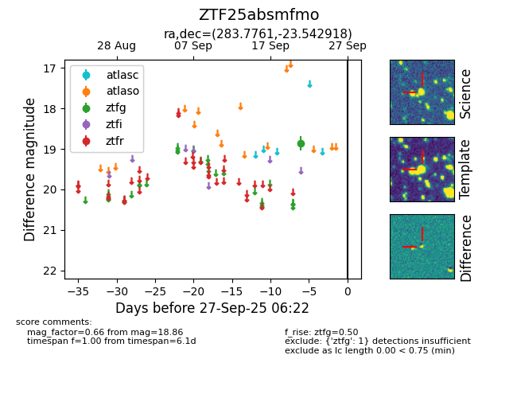

FINK: ZTF25absmfmo
Lasair: ZTF25absmfmo
ALeRCE: ZTF25absmfmo
ZTF25absmfmo (ztf,fink)
equatorial (ra, dec) = (283.7761,-23.54292)
galactic (l, b) = (12.0988,-11.25572)

last ztfg=18.86
1 ztfg detections